The aim of this article is to consolidate and update echo's, parent's and HD x264 encoding guides. It is intended to provide straightforward instructions which will result in a decent encode, with links and additional resources in hide tags for people interested in more advanced topics.
This guide assumes you are starting with a m2ts image or a remux. If you are still holding a physical disc, follow Wiki > How to rip a BluRay (2016) first.
Required software
Overview
A typical workflow would look like this:
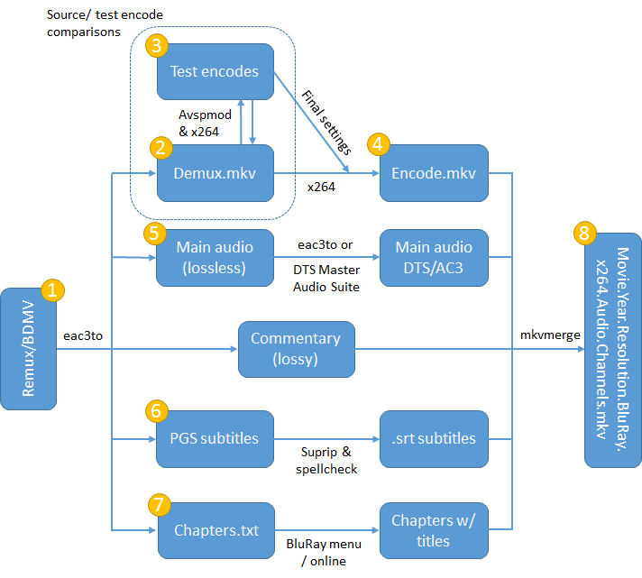
The numbers in the yellow bubbles correspond to the chapters of this guide.
1. Demux your source with eac3to
Extract BDMV/m2ts : Show
Extract a specific track : Show
Extract a remux : Show
2. Crop, filter & resize with AvsPmod
Open a new tab in avspmod and load your demuxed video file
Press F5 and wait a few minutes for the video to be indexed and loaded.
Crop
If your picture is surrounded by black bars, you need to crop them out.
1. Open Crop Editor from the Video menu.
2. Adjust the cropping so that you remove all the black bars. You can only crop in multiples of 2 pixels. Leave one black line in if you can't crop it to an even number, we'll fix it in the filtering stage.
3. Select 'Insert Crop() command at script end' and click Apply
Filter
Each filtering step is optional, and depends entirely on the quality of the source. Incorrect filtering can easily do more harm than good, feel free to ask for help in Encoding Workshop... ***Get Encoding Help Here*** and #ptp-encoding if you have any doubts.
Fix dirty lines : Show
Fix banding : Show
Fix edge enhancement artifacts : Show
Fix double levels compression : Show
Resize
If you are encoding 1080p, skip this part -- you are not doing any resizing, even if the cropped image is smaller than 1920x1080 (never upscale!).
If you are making a 720p or SD encode, you need to resize it accordingly:
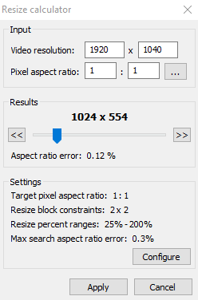
1. Open Resize calculator from the Tools menu.
2. Click configure
3. Set Resize block constraints to 2x2 and change 'Avisynth resize' to 'Spline36ResizeMod(%width%, %height%)', click OK
4. Drag the slider until both the width and height of your scaled picture is either equal or smaller than the maximum dimensions in the table above. Example: 1920x1008 source will scale to 1280x672 but 1410x1080 will scale to 940x720. In other words, it must "fit inside" the maximum size for a given format in the table above.
5. Click Apply
If you duplicated a single line using FillMargins, you can omit it during scaling. For example, to omit one line on left and one on right side use the following:
You cannot directly remove a single black line this way, as it would still be sampled during resizing and 'dirty up' the adjacent line. That is why in the filtering stage we used FillMargins to get rid of it.
Hint: Avisynth chroma resize bug and what is Spline36ResizeMod: Show
3. Test video encodes with AvsPmod and Simple x264 Launcher
Once you are happy with your filtering it is time to get started on making test encodes to optimize the x264 settings for your movie. There is no silver bullet here so you will need to evaluate a number of parameters (one at a time) as you compare your test encode to the filtered source.
Let's start with making a single test encode. At the end of your avisynth script append SelectRangeEvery(4000,100,10000)
This will pick 100 continuous frames every 4000 frames omitting the first 10000 frames (opening credits etc). Adjust the first parameter (4000) to get around 3000 frames to work with which are representative of the whole movie. You will want static scenes, high-motion scenes, close-ups, dark scenes and brightly lit scenes. Once you are happy with your choice, save the .avs file, open Simple x264 launcher and select Job - Create job.
Make sure that the drop down menus are selected as in the screenshot below (click the image to enlarge).
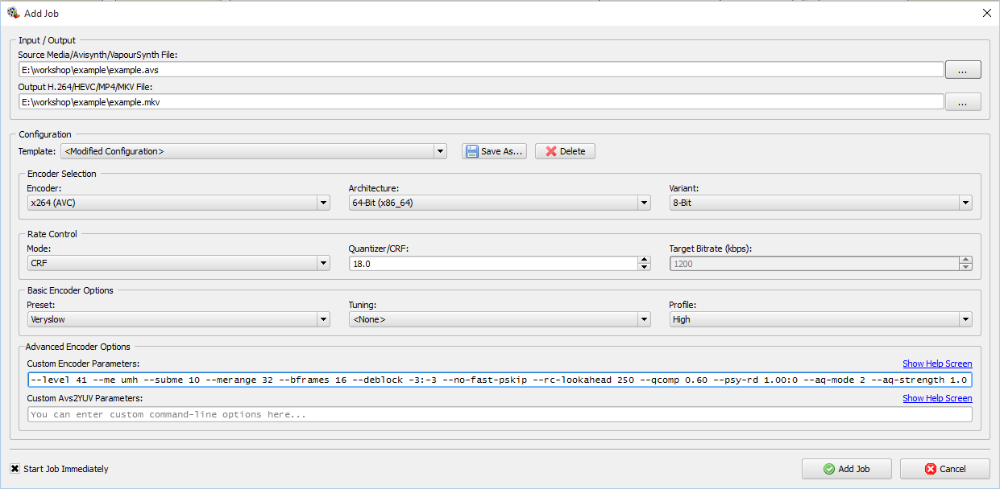
For the baseline encoding settings, paste the following line under Custom Encoder Parameters:
If you encode at a SD resolution, it is a good idea to append '
For now, let's make a single test encode and compare it to our source. Click Add Job and wait for the encode to finish.
Once done, open a new tab in avspmod and paste the following:
Hit F5. Avspmod will annotate the frames and display each frame from the source followed by the respective frame of the encode. You can use the keyboard arrow keys to step through the video one frame at a time. Your objective is to visually compare the quality of 'B-type' frames in the encode to 'P-type' frames in the source in order to find the best settings. And why's that?: Show
Having issues with frames not matching between your source and encode (off by 1)? Try downgrading to an earlier version of ffms2 (i.e. 2.20 from here).
But we are going to need much more than one test encode to determine that!
The first step is to find the optimal bitrate for your video. Make a series of encodes decreasing the CRF value by 1 until your test encode has subjectively the same quality as the source. Now make a series of encodes that increase CRF by 0.2 until you find the bitrate at which the quality begins to degrade. Look in the log of the last satisfactory test encode for the bitrate and note it down.
The second step is to switch to 2-pass mode and optimize the individual parameters. Create a new job, change 'Mode' to '2-pass' and enter the target bitrate obtained in the previous step. Click Add job - this will be your first reference test encode.
It is beyond the scope of this guide (and its author competency) to explain the theory behind each parameter that needs to be optimized. If you are interested, read Mosc's Guide to x264, Detail Loss & Desperation. Meanwhile, the parameters need to be empirically tested anyway.
Test --qcomp (0.60-0.80 by 0.05 increments), --aq-mode (1,2 or 3), --aq-strength (0.50-1.10 by 0.05 increments), --psy-rd (0.80:0.00-1.15:0.00 by 0.05 increments), and finally psy-trellis (0.00-0.15 by 0.05 increments) changing only one parameter at a time. Once you determine the optimal value for one parameter, keep it and move on to the next one. A well-tested encode will take dozens of tests.
This is a very thorough approach that should give you a good result. There may be cases where other values outside these ranges may be necessary (e.g. psy-rd 0.35-0.80 for animation), but these are usually more than sufficient. You can test at 0.1 increments and then further at 0.05 increments to save time.
In addition, test --no-mbtree and --no-dct-decimate. With --no-mbtree you might also want to lower --pbratio. Testing deblock -3-2, -2-2, -2-1 can be useful for SD sources.
Once you've found the best values for these settings, switch back to CRF mode and test until you find the value which produces the same (or lower) bitrate as your 2 pass encode at the same quality.
Hint: What to look for in image comparisons?: Show
You may find that certain scenes require more bitrate, while others consume too much. In that case it is recommended to 'zone' them, that is, adjust the crf value just for selected scenes. In order to do that, add e.g. --zones a,b,crf=15/c,d,crf=16 to the parameters of your final encode, where a and b (or c and d) are the first and last frames of a scene for which you want to override the crf value used for the rest of the movie.
4. Final video encode with Simple x264 Launcher
For the final encode, edit your .avs script to remove SelectRangeEvery(), save, and restart x264 Launcher using your optimized settings. The encoding process with the options suggested above will likely take several hours on a reasonably modern 4-core PC. If you have an exceptionally fast machine, or don't care about encoding time, you can add --me tesa --subme 11 to squeeze out the last tiny bit of improvement at the cost of likely doubling the encode time.
Hint: What about ref or bframes?: Show
5. Encode audio with eac3to or DTS-HD Audio Suite
You need to pick an appropriate audio codec for the resolution you want to encode. Refer to the table below:
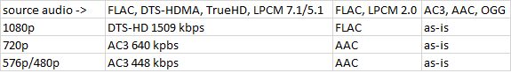
Note: 24-bit FLAC should be reduced to 16 bits. See Wiki > Audio bit-depth reduction and sample rate conversion for details.
Transcoding TrueHD/FLAC to DTS Spoiler: Show
Transcoding DTS-HD MA to DTS Spoiler: Show
Transcoding to AC3 Spoiler: Show
Transcoding to AAC Spoiler: Show
6. OCR subtitles with Suprip and SubtitleEdit
Subtitles on a BluRay are saved in a bitmap format (PGS). They need to be OCR'd to a text file before you can include them in the final encode.
1. Open Suprip. Click Open... and load your .sup file that was extracted with eac3to.
2. Tick 'Automatically continue with next subtitle'
3. Press Ctrl-O. SupRip will show you the first character it is unable to identify. Enter that character(s), into the box next to the OK button. Hit Enter to display the next character that SupRip can't identify.
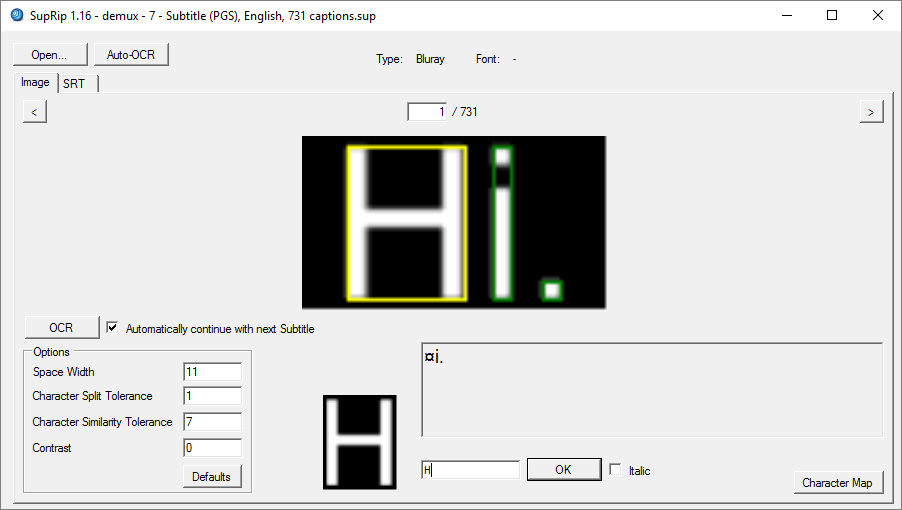
3. Repeat until you reach the end of the subtitles. Remember to make use of the Italic checkbox when necessary.
4. When you are done, click the SRT tab and save your .srt file.
5. Open your .srt file in SubtitleEdit.
6. Go to Tools - Fix common errors and select the following options:
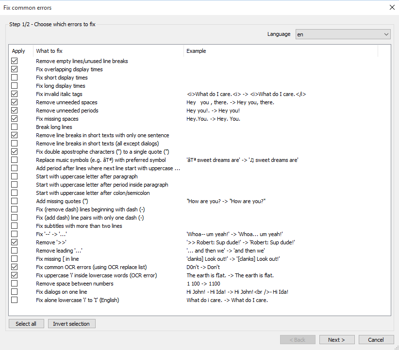
7. Click Next, select the errors you want to fix, and click Apply selected fixes.
8. Go to Spell check - Spell check, select the correct language dictionary, and correct any remaining typos
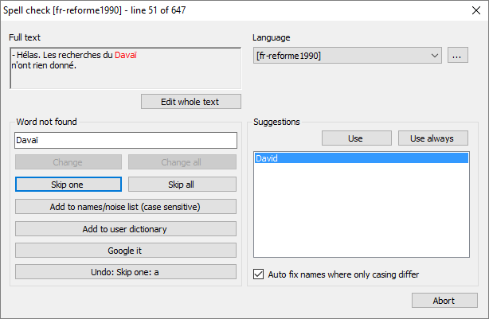
9. Save the corrected .srt file
It is recommended to watch the movie with the ripped and corrected subtitles as some typos may slip through the process described above.
Note that Suprip may crash on certain subtitles. As an alternative, consider using subextractor.
7. Prepare chapters
You have obtained the chapter list when you extracted the source. The file will be called 'demux - Chapters.txt'. Open it to preview it.
Likely, the chapters will lack proper titles and contain timecodes only. Your options here are rather limited.
If you find the chapter titles, edit the text file accordingly and save it in UTF-8 encoding.
8. Mux it all together with mkvmerge GUI
Time to put everything together using mkvmerge GUI.
1. Open mkvmerge GUI
2. Go to Muxing - Add command line options
3. Paste the following line under 'Command line options' to ensure maximum compatibility with standalone players and older software:
4. Tick 'Save as default' and click OK
5. Drag the encoded files (video, audio & subtitles) to Input files
6. For each track set the correct language.
7. If you have multiple audio tracks, set the main track to 'default: yes'
8. If the default audio track is foreign, set English subtitles to 'default: yes' Hint: What about forced subs?: Show
9. Set Track names for special tracks as necessary (commentary audio, Atmos track, hard-of-hearing subtitles etc.)
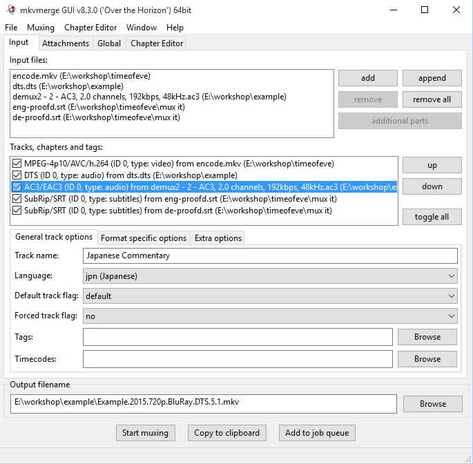
10. Switch to 'Global' tab
11. Load your chapters file and select the correct language and UTF-8 encoding
12. Set the output file name to Movie.Year.Resolution.BluRay.x264.Audio.Channels.mkv and click Start Muxing
At this point your encoding work is done, congratulations! Make final checks to ensure you didn't make a mistake somewhere -- watching the complete encode is always a good idea (if you are not sick of it yet). Once that's done, create a torrent and upload it!
Appendix 1: Special cases
Note: Many tools mentioned in this section are not included in the plugin pack.
1. "My source is interlaced."
A vast majority of BluRays is progressive (1080p), however, you may happen across a 1080i file with a framerate of 50 or 60fps and visibly misaligned odd and even lines. If you want to encode it to 720p resolution it is recommed to deinterlace it at the beginning of your script:
If you want to encode it to 1080p, you need to consider that Level 4.1 which is targeted on PTP for compatibility with hardware players allows for a maximum of 30 frames at 1080p. In this case, you may want to consider encoding 720p60/720p50, or decimating your deinterlaced source to 30/25fps for some loss of the temporal resolution:
If you are having trouble seeking in the interlaced source with ffms2, consider using DGDecNV/DGAVCDecDi.
2. "My source says it's interlaced, but it is not."
The Blu-ray standard does not allow for 1080p25. Some Blu-rays may use what's called a 'fake interlace' where progressive content is tagged as interlaced. In that case, a Blu-ray may appear to be 1080i50, but in fact have duplicated progressive frames. Step through your video in avisynth to verify that. If that's the case, you can decimate the duplicated frames with SelectEven() and treat the source as progressive.
3. "My source is encoded with VC-1."
Make sure that the VC-1 source is your only option, as often VC-1 is inferior to AVC releases. If you need to encode a VC-1 source, you need to use a different decoder than ffms2.
If you have a NVIDIA gpu, it's recommended to use DGDecNV. For an AMD card you can try DGAVCDecDI + DiAVC. If that fails, you can try to use dss2mod + ffdshow.
4. "My source uses MBAFF."
With MBAFF encoding, each macroblock can be either progressive or interlaced. It's recommended to use a decoder which plays nice with MBAFF/PAFF streams, to be on the safe side use DGDecNV/DGAVCDecDI. A correctly decoded source can be then deinterlaced with QTGMC.
With thanks to the creators of the original guides, nonshatter, Darky, Mosc, F00D and all the lurkers in #ptp-encoding.
This guide assumes you are starting with a m2ts image or a remux. If you are still holding a physical disc, follow Wiki > How to rip a BluRay (2016) first.
Required software
Avisynth v.2.6.0
Plugin Bundle (Updated)
AvsPmod
Simple x264 Launcher
MKVToolNix v8.3 + MkvExtractGUI
DTS-HD Master Audio Suite 2.60.22
eac3to + Haali Media Splitter
SupRip
SubtitleEdit
Overview
A typical workflow would look like this:
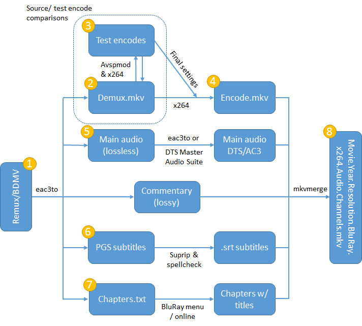
The numbers in the yellow bubbles correspond to the chapters of this guide.
1. Demux your source with eac3to
Extract BDMV/m2ts : Show
1. Open a command line (Win+R, cmd.exe) and navigate to the eac3to folder
cd c:\tools\eac3to
2. Point eac3to to your BDMV folder to list the available titles
eac3to.exe e:\example\BDMV\
1) 01000.mpls, 00000.m2ts, 1:46:31
- Chapters, 24 chapters
- h264/AVC, 1080p24 /1.001 (16:9)
- RAW/PCM, English, stereo, 48kHz
- RAW/PCM, Japanese, stereo, 48kHz
- AC3, Japanese, stereo, 48kHz
2) 01011.mpls, 00011.m2ts, 0:38:03
- Chapters, 19 chapters
- h264/AVC, 1080p24 /1.001 (16:9)
3. Select the playlist you want to extract (in our example 01000.mpls) and the destination
eac3to.exe e:\example\BDMV\ 1) e:\example\source\demux.mkv
eac3to will extract audio, chapters and subtitles and place individual files in the destination directory alongside demux.mkv containing the video track. Lossless audio tracks will be converted to FLAC by default, lossy audio will be extracted intact.
If there are dozens of similar entries it is possible the disc was deliberately obfuscated. See Ripping Obfuscated Blu-ray Discs for details.
Extract a specific track : Show
You may want to extract tracks one-by-one, which is especially useful for converting audio, but can be used for any single track. For example, to extract only the English subtitle track enter its number followed by a colon (5:) and the format of the output file you want (eng.sup):
eac3to.exe 1) 5: eng.sup
M2TS, 1 video track, 3 audio tracks, 2 subtitle tracks, 0:06:46, 24p /1.001
1: h264/AVC, 1080p24 /1.001 (16:9)
2: RAW/PCM, Japanese, 2.0 channels, 24 bits, 48kHz
3: DTS Master Audio, Japanese, 5.1 channels, 24 bits, 48kHz
(core: DTS, 5.1 channels, 1509kbps, 48kHz)
4: AC3, English, 2.0 channels, 192kbps, 48kHz
5: Subtitle (PGS), English
6: Subtitle (PGS), Russian
s05 Extracting subtitle track number 5...
s05 Creating file "eng.sup"...
For another example, see Transcoding DTS-HD MA to DTS in chapter 5 of this guide.
Extract a remux : Show
Unfortunately eac3to cannot extact compressed PGS subtitles from mkv files. For that reason it is recommended to first extract the video track using eac3to and then demux the PGS subtitles using MKVExtractGUI. You can use either eac3to or MKVExtractGUI to demux the audio tracks, whichever better fits your workflow.
1. Open a command line (Win+R, cmd.exe) and navigate to the eac3to folder
cd c:\tools\eac3to
2. Point eac3to to the remux file and demux the video track
eac3to.exe e:\example\Remux.mkv 1: e:\example\source\video.mkv
3. Place MKVExtractGUI2.exe in the folder where you installed mkvtoolnix
4. Launch MKVExtractGUI2.exe
5. Select the input file, output destination, and the tracks you want to extract. Click Extract
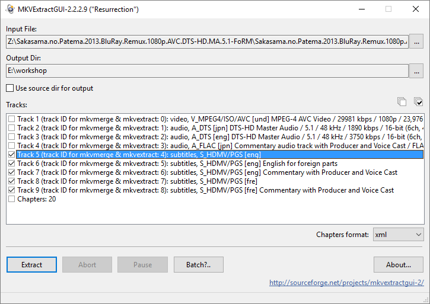
MKVExtract will extract the selected tracks (audio, subtitles, chapters etc) and place the individual files in the destination directory.
2. Crop, filter & resize with AvsPmod
Open a new tab in avspmod and load your demuxed video file
ffvideosource("C:\workshop\Movie\demux.mkv")
Press F5 and wait a few minutes for the video to be indexed and loaded.
Crop
If your picture is surrounded by black bars, you need to crop them out.
1. Open Crop Editor from the Video menu.
2. Adjust the cropping so that you remove all the black bars. You can only crop in multiples of 2 pixels. Leave one black line in if you can't crop it to an even number, we'll fix it in the filtering stage.
3. Select 'Insert Crop() command at script end' and click Apply
Filter
Each filtering step is optional, and depends entirely on the quality of the source. Incorrect filtering can easily do more harm than good, feel free to ask for help in Encoding Workshop... ***Get Encoding Help Here*** and #ptp-encoding if you have any doubts.
Fix dirty lines : Show
If cropping left a single black line by any edge, you can fix it with FillMargins(left,top,right,bottom). For example, to overwrite one black line on top useFillMargins(0,1,0,0).
Generally, you should not use FillMargins on more than one line.
If the borders of your frame are not black but "dirty" and do not match the rest of the image in brightness, you can fix them using
BalanceBorders(top,bottom,left,right,threshold,blur). Note that the order of parameters is different from FillMargins. The threshold parameter determines the maximum difference in values that will be corrected, and can often be lowered. Lowering the "blur" parameter will increase the strength of the filter, but will result in artifacts if multiple lines needs fixing so it is best to keep it at default if possible.
You can still use BalanceBorders after replacing a black line with FillMargins, for example:
FillMargins(0,1,0,0)
BalanceBorders(2,2,1,1,32,999)
In more difficult cases multiple lines may be dirty and alternate in brightness which tends to confuse BalanceBorders.
For example, in the following frame six top and bottom rows are dirty:
Here is a zoomed fragment of the frame:
You can see that the first row is much too dark, second row is too bright, third and fourth a little too dark, fifth a little too bright and sixth again a little too dark. You can try to correct these with FixRowBrightness(row,16,255,16,255).
To make a row brighter, decrease the third parameter. To make it darker, decrease the fifth one. You need to find the optimal values experimentally. In our example:
fixrowbrightness(0,16,216,16,255) #this is the first row since we start counting at 0
fixrowbrightness(1,16,255,16,237)
fixrowbrightness(2,16,246,16,255)
fixrowbrightness(3,16,252,16,255)
fixrowbrightness(4,16,255,16,253)
fixrowbrightness(5,16,254,16,255)
That will give you the following result:
Source, Filtered: Show comparison
Now repeat the same process for the bottom six rows (798, 799, 800, 801, 802 and 803).
If the dirty lines are vertical, use FixColumnBrightness(row,16,255,16,255) instead.


Fix banding : Show
Source, Filtered: Show comparison
In this example, banding was fixed with GradFun3() filter. Another popular one is f3kdb(). Since debanding filters are fairly aggressive and increase bitrate due to the added dither, you typically want to apply them only to selected scenes. You can selectively deband and join multiple scenes in the following fashion:
a=f3kdb()
trim(a,0,7854)+trim(7855,8092)+trim(a,8093,8288)+trim(8289,8864)+trim(a,8865,194400)
Read the documentation of each filter and experiment with the parameters to find a suitable setting.
Note that it is very easy to reintroduce banding if your x264 encoding settings are incorrect. Raising aq-strength and optimizing other parameters might help.
Hint: Debanding with f3kdb should be done as the last step of your script. That means that if you are making a 720p/SD encode, it should be done after resizing (see the next section). If you are debanding with GradFun3, you might want to consider debanding and resizing in 16 bit, then dithering to 8 bit. For example:
Dither_convert_8_to_16()
gradfun3(mode=-1,smode=2,lsb_in=true, lsb=true) #disable dithering at this point with -1
dither_resize16(1280,536,0,0,0,0,kernel="spline36")
ditherpost(mode=6,ampn=0.4) #dither after resizing
Fix edge enhancement artifacts : Show
Source, Filtered: Show comparison
In this example, the source displays heavy edge enhancement artifacts in the form of ringing around the edges of objects. Here, it has been improved with HQDering(), but other filters worth considering include EdgeCleaner() and hqderingmod(). Note that much like with debanding, deringing filters can be fairly strong and should be used with extra care.
Fix double levels compression : Show
Source, Filtered: Show comparison
In this example, incorrect levels compression was fixed with SmoothLevels(preset="tv2pc",chroma=0).smoothtweak(sat=1.1384) This happens if the source was incorrectly mastered with level range compression applied twice. If blacks don't appear to be black, this is the filtering option worth investigating. Make sure to apply this filter only when needed, as the way a movie looks could have been a deliberate decision in post-production rather than a technical mistake.
Resize
If you are encoding 1080p, skip this part -- you are not doing any resizing, even if the cropped image is smaller than 1920x1080 (never upscale!).
If you are making a 720p or SD encode, you need to resize it accordingly:
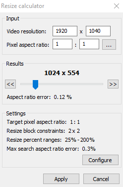
1. Open Resize calculator from the Tools menu.
2. Click configure
3. Set Resize block constraints to 2x2 and change 'Avisynth resize' to 'Spline36ResizeMod(%width%, %height%)', click OK
4. Drag the slider until both the width and height of your scaled picture is either equal or smaller than the maximum dimensions in the table above. Example: 1920x1008 source will scale to 1280x672 but 1410x1080 will scale to 940x720. In other words, it must "fit inside" the maximum size for a given format in the table above.
5. Click Apply
If you duplicated a single line using FillMargins, you can omit it during scaling. For example, to omit one line on left and one on right side use the following:
Spline36ResizeMod(1278, 720,1,0,-1,0)You cannot directly remove a single black line this way, as it would still be sampled during resizing and 'dirty up' the adjacent line. That is why in the filtering stage we used FillMargins to get rid of it.
Hint: Avisynth chroma resize bug and what is Spline36ResizeMod: Show
Avisynth does not correctly resize chroma. To fix that, Darky and Nonshatter came up with a drop-in replacement function for Spline36Resize which correctly scales the required offsets. It is included in the plugin bundle as SplineResizeMod.avsi
3. Test video encodes with AvsPmod and Simple x264 Launcher
Once you are happy with your filtering it is time to get started on making test encodes to optimize the x264 settings for your movie. There is no silver bullet here so you will need to evaluate a number of parameters (one at a time) as you compare your test encode to the filtered source.
Let's start with making a single test encode. At the end of your avisynth script append SelectRangeEvery(4000,100,10000)
This will pick 100 continuous frames every 4000 frames omitting the first 10000 frames (opening credits etc). Adjust the first parameter (4000) to get around 3000 frames to work with which are representative of the whole movie. You will want static scenes, high-motion scenes, close-ups, dark scenes and brightly lit scenes. Once you are happy with your choice, save the .avs file, open Simple x264 launcher and select Job - Create job.
Make sure that the drop down menus are selected as in the screenshot below (click the image to enlarge).
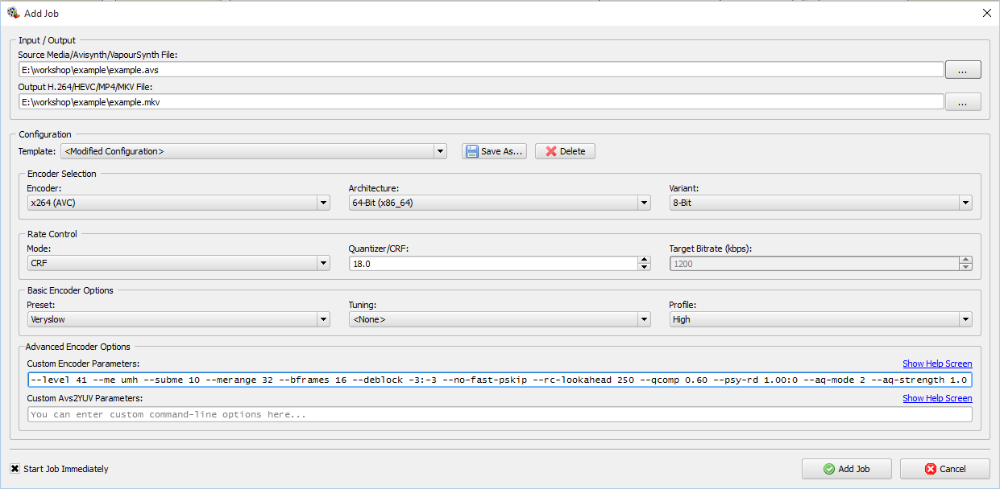
For the baseline encoding settings, paste the following line under Custom Encoder Parameters:
--level 41 --vbv-bufsize 78125 --vbv-maxrate 62500 --merange 32 --bframes 16 --deblock -3:-3 --no-fast-pskip --rc-lookahead 250 --qcomp 0.60 --psy-rd 1.00:0.00 --aq-mode 2 --aq-strength 1.00If you encode at a SD resolution, it is a good idea to append '
--colormatrix bt709' to your custom parameters. This will ensure that compatible players will use the correct color matrix for BluRay sourced video. For more background information, check out Wiki > How to correct color matrices during playbackFor now, let's make a single test encode and compare it to our source. Click Add Job and wait for the encode to finish.
Once done, open a new tab in avspmod and paste the following:
a=import("E:\workshop\example\example.avs").subtitle("Source", align=8).ffinfo(cfrtime=false,vfrtime=false) #Filtered source
b=ffvideosource("E:\workshop\example\18.mkv").subtitle("Encode crf18", align=8).ffinfo(cfrtime=false,vfrtime=false) # Test encode CRF18
#c=ffvideosource("E:\workshop\example\17.mkv").subtitle("Encode crf17", align=8).ffinfo(cfrtime=false,vfrtime=false)
interleave(a,b)
Hit F5. Avspmod will annotate the frames and display each frame from the source followed by the respective frame of the encode. You can use the keyboard arrow keys to step through the video one frame at a time. Your objective is to visually compare the quality of 'B-type' frames in the encode to 'P-type' frames in the source in order to find the best settings. And why's that?: Show
Mael at TC wrote:Well, if you take a particular I-frames of the encode and compare them with the corresponding source frames – you won’t learn a thing. That is because, I-frames are treated with great sanctity; and thus the encoder tries replicates these frames as faithfully w.r.t. the source as possible even when you use a relatively bad setting.
A B-frame, on the other hand, takes advantage of compression techniques the most – so B-frames are the best indicators.
When a frame that was P-frame in source [P-frames are space-heavier than B-frames]; but is encoded as a B-frame in encode – such a frame best indicates how much work [or damage] your encoder has done. When a frame that was P in source and B in encode resemble each other – that means that your encoder has created an encode that is very faithful to the source.
Having issues with frames not matching between your source and encode (off by 1)? Try downgrading to an earlier version of ffms2 (i.e. 2.20 from here).
But we are going to need much more than one test encode to determine that!
The first step is to find the optimal bitrate for your video. Make a series of encodes decreasing the CRF value by 1 until your test encode has subjectively the same quality as the source. Now make a series of encodes that increase CRF by 0.2 until you find the bitrate at which the quality begins to degrade. Look in the log of the last satisfactory test encode for the bitrate and note it down.
The second step is to switch to 2-pass mode and optimize the individual parameters. Create a new job, change 'Mode' to '2-pass' and enter the target bitrate obtained in the previous step. Click Add job - this will be your first reference test encode.
It is beyond the scope of this guide (and its author competency) to explain the theory behind each parameter that needs to be optimized. If you are interested, read Mosc's Guide to x264, Detail Loss & Desperation. Meanwhile, the parameters need to be empirically tested anyway.
Test --qcomp (0.60-0.80 by 0.05 increments), --aq-mode (1,2 or 3), --aq-strength (0.50-1.10 by 0.05 increments), --psy-rd (0.80:0.00-1.15:0.00 by 0.05 increments), and finally psy-trellis (0.00-0.15 by 0.05 increments) changing only one parameter at a time. Once you determine the optimal value for one parameter, keep it and move on to the next one. A well-tested encode will take dozens of tests.
This is a very thorough approach that should give you a good result. There may be cases where other values outside these ranges may be necessary (e.g. psy-rd 0.35-0.80 for animation), but these are usually more than sufficient. You can test at 0.1 increments and then further at 0.05 increments to save time.
In addition, test --no-mbtree and --no-dct-decimate. With --no-mbtree you might also want to lower --pbratio. Testing deblock -3-2, -2-2, -2-1 can be useful for SD sources.
Once you've found the best values for these settings, switch back to CRF mode and test until you find the value which produces the same (or lower) bitrate as your 2 pass encode at the same quality.
Hint: What to look for in image comparisons?: Show
This is a contentious issue, and each encoder with time develops his or her own notions of what amounts to transparency. As general guidelines, look for detail loss in highly complex objects (e.g. eyes and surrounding areas), hair, objects out of focus and backgrounds, in dark areas, and in the texture of skin and clothing. You also don't want to introduce banding (e.g. too low aq strength on gradients), ringing (e.g. too high psy-trellis), or soften the grain (e.g. too low psy-rd or incorrect filtering). You will learn to recognize these issues with experience, you are not expected to nail it with your first encode.
You may find that certain scenes require more bitrate, while others consume too much. In that case it is recommended to 'zone' them, that is, adjust the crf value just for selected scenes. In order to do that, add e.g. --zones a,b,crf=15/c,d,crf=16 to the parameters of your final encode, where a and b (or c and d) are the first and last frames of a scene for which you want to override the crf value used for the rest of the movie.
4. Final video encode with Simple x264 Launcher
For the final encode, edit your .avs script to remove SelectRangeEvery(), save, and restart x264 Launcher using your optimized settings. The encoding process with the options suggested above will likely take several hours on a reasonably modern 4-core PC. If you have an exceptionally fast machine, or don't care about encoding time, you can add --me tesa --subme 11 to squeeze out the last tiny bit of improvement at the cost of likely doubling the encode time.
Hint: What about ref or bframes?: Show
The number of reference frames is automatically determined through the combination of profile, preset and level 4.1 so it is not necessary to calculate it manually. I have not covered optimizing bframes, as x264 will only use as many bframes as it needs, and the time you actively waste making a long test encode trying to determine the optimal value will likely not be recuperated by the shorter encoding time of the final file.
5. Encode audio with eac3to or DTS-HD Audio Suite
You need to pick an appropriate audio codec for the resolution you want to encode. Refer to the table below:
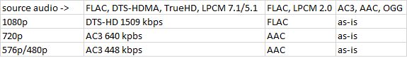
Note: 24-bit FLAC should be reduced to 16 bits. See Wiki > Audio bit-depth reduction and sample rate conversion for details.
Transcoding TrueHD/FLAC to DTS Spoiler: Show
1. Decode TrueHD/FLAC to wavs
eac3to e:\example\source\input.flac e:\example\source\output.wavs
This will create a separate .wav file for each channel.
2. Open DTS-HD Master Audio Suite and select DVD
3. Load the wavs in their respective channels, make sure the frame rate is correct and press Encode
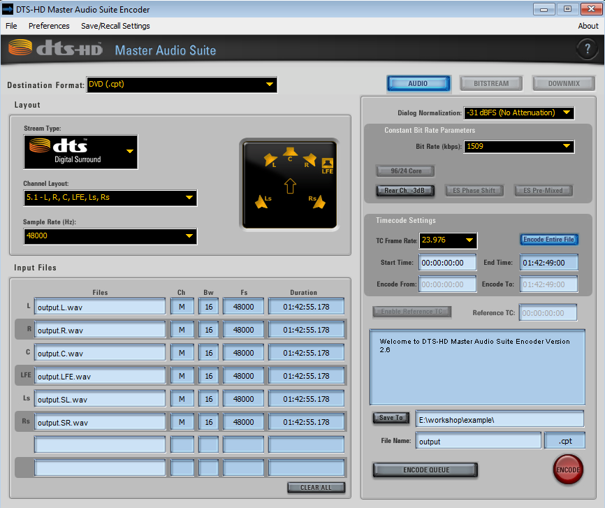
4. Change the extension of the resulting file to .dts
Hint: Downmixing 7.1 to 5.1: ShowIf your source is 7.1 and you want to include only 5.1 in your encode, pass '-down6' to eac3to when converting. Otherwise you may opt to include the original 7.1 audio track in your 1080p encode.
Transcoding DTS-HD MA to DTS Spoiler: Show
If the audio of your source is DTS-HD MA you can skip encoding with DTS-HD Master Audio Suite and simply extract the DTS core.
Find out the number of the audio track, and extract it directly like this:
eac3to.exe e:\example\BDMV\PLAYLIST\01000.mpls
M2TS, 2 video tracks, 3 audio tracks, 5 subtitle tracks, 1:42:55, 62.856p
1: Chapters, 20 chapters
2: h264/AVC, 1080p24 /1.001 (16:9)
3: h264/AVC, 480p24 /1.001 (20:11)
4: DTS Master Audio, English, 5.1 channels, 16 bits, 48kHz, -11ms
(core: DTS, 5.1 channels, 1509kbps, 48kHz)
Here, the audio track we want is number 4.
eac3to e:\example\BDMV\PLAYLIST\01000.mpls 4: e:\example\source\output.dts -core
Transcoding to AC3 Spoiler: Show
For 720p/640kbps audio:
eac3to e:\example\source\input.flac e:\example\source\output.ac3 -640
For SD/448kbps audio:
eac3to e:\example\source\input.flac e:\example\source\output.ac3 -448
If you want to create higher quality AC3 files, check out Wiki > How to encode AC3 with Sony Sound Forge
Transcoding to AAC Spoiler: Show
eac3to e:\example\source\input.flac e:\example\source\output.aac -quality=1.0
Commentary tracks require much lower bitrate and can be encoded at ~96kbps or less (approximately -quality=0.4 in eac3to). For better quality at lower bitrates, consider using qaac as described in Wiki > How to encode AAC with qaac.
6. OCR subtitles with Suprip and SubtitleEdit
Subtitles on a BluRay are saved in a bitmap format (PGS). They need to be OCR'd to a text file before you can include them in the final encode.
1. Open Suprip. Click Open... and load your .sup file that was extracted with eac3to.
2. Tick 'Automatically continue with next subtitle'
3. Press Ctrl-O. SupRip will show you the first character it is unable to identify. Enter that character(s), into the box next to the OK button. Hit Enter to display the next character that SupRip can't identify.
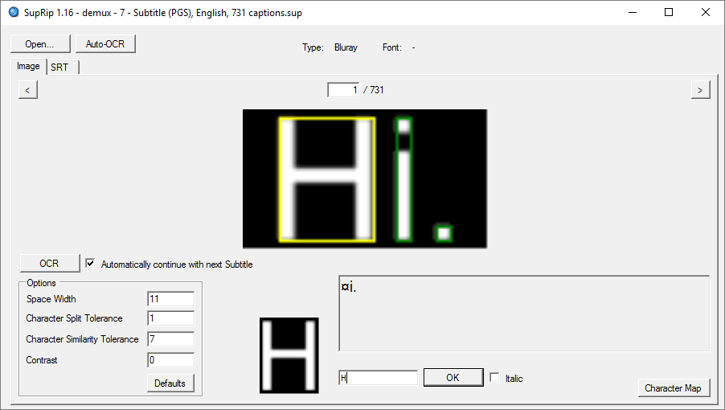
3. Repeat until you reach the end of the subtitles. Remember to make use of the Italic checkbox when necessary.
4. When you are done, click the SRT tab and save your .srt file.
5. Open your .srt file in SubtitleEdit.
6. Go to Tools - Fix common errors and select the following options:
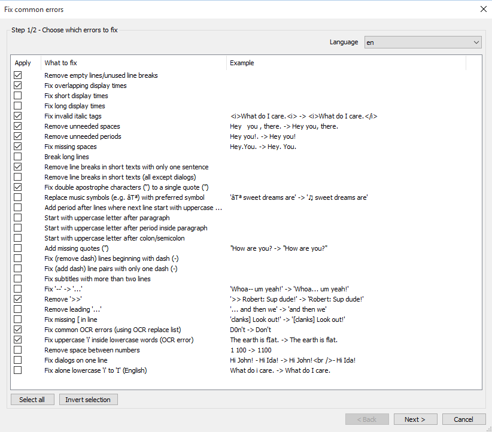
7. Click Next, select the errors you want to fix, and click Apply selected fixes.
8. Go to Spell check - Spell check, select the correct language dictionary, and correct any remaining typos
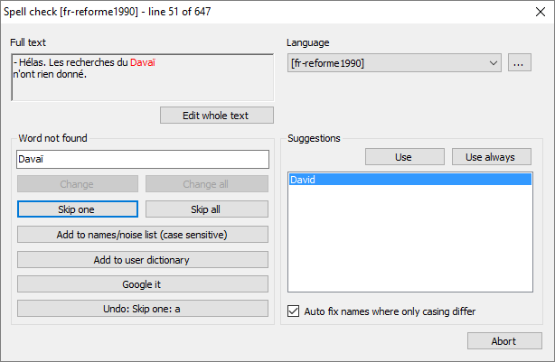
9. Save the corrected .srt file
It is recommended to watch the movie with the ripped and corrected subtitles as some typos may slip through the process described above.
Note that Suprip may crash on certain subtitles. As an alternative, consider using subextractor.
7. Prepare chapters
You have obtained the chapter list when you extracted the source. The file will be called 'demux - Chapters.txt'. Open it to preview it.
Likely, the chapters will lack proper titles and contain timecodes only. Your options here are rather limited.
- Check the BluRay menu using a commercial player or software. You might have some luck with VLC but it handles the menus poorly.
- Check http://chapterdb.org/browse to see if the chapters for your movie have been submitted.
- Check other encodes & online listings to see if the chapter list is available elsewhere.
If you find the chapter titles, edit the text file accordingly and save it in UTF-8 encoding.
8. Mux it all together with mkvmerge GUI
Time to put everything together using mkvmerge GUI.
1. Open mkvmerge GUI
2. Go to Muxing - Add command line options
3. Paste the following line under 'Command line options' to ensure maximum compatibility with standalone players and older software:
--engage no_cue_duration,no_cue_relative_position,no_simpleblocks --clusters-in-meta-seek --disable-lacing4. Tick 'Save as default' and click OK
5. Drag the encoded files (video, audio & subtitles) to Input files
6. For each track set the correct language.
7. If you have multiple audio tracks, set the main track to 'default: yes'
8. If the default audio track is foreign, set English subtitles to 'default: yes' Hint: What about forced subs?: Show
In movies that are predominantly in English but feature scenes with foreign languages, a special subtitle track called 'forced subs' for only those scenes can be included on the BluRay. For compatibility reasons don't use the forced flag in mkvmerge, set them to 'default: yes' instead.
9. Set Track names for special tracks as necessary (commentary audio, Atmos track, hard-of-hearing subtitles etc.)
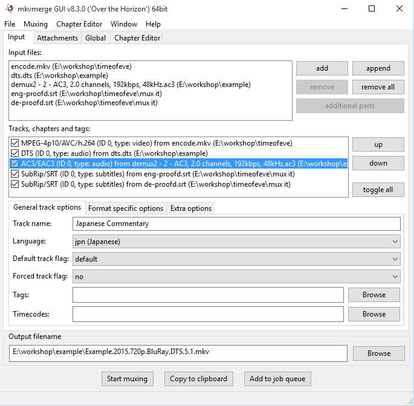
10. Switch to 'Global' tab
11. Load your chapters file and select the correct language and UTF-8 encoding
12. Set the output file name to Movie.Year.Resolution.BluRay.x264.Audio.Channels.mkv and click Start Muxing
At this point your encoding work is done, congratulations! Make final checks to ensure you didn't make a mistake somewhere -- watching the complete encode is always a good idea (if you are not sick of it yet). Once that's done, create a torrent and upload it!
Appendix 1: Special cases
Note: Many tools mentioned in this section are not included in the plugin pack.
1. "My source is interlaced."
A vast majority of BluRays is progressive (1080p), however, you may happen across a 1080i file with a framerate of 50 or 60fps and visibly misaligned odd and even lines. If you want to encode it to 720p resolution it is recommed to deinterlace it at the beginning of your script:
QTGMC("medium")If you want to encode it to 1080p, you need to consider that Level 4.1 which is targeted on PTP for compatibility with hardware players allows for a maximum of 30 frames at 1080p. In this case, you may want to consider encoding 720p60/720p50, or decimating your deinterlaced source to 30/25fps for some loss of the temporal resolution:
QTGMC("medium").SelectEven()If you are having trouble seeking in the interlaced source with ffms2, consider using DGDecNV/DGAVCDecDi.
2. "My source says it's interlaced, but it is not."
The Blu-ray standard does not allow for 1080p25. Some Blu-rays may use what's called a 'fake interlace' where progressive content is tagged as interlaced. In that case, a Blu-ray may appear to be 1080i50, but in fact have duplicated progressive frames. Step through your video in avisynth to verify that. If that's the case, you can decimate the duplicated frames with SelectEven() and treat the source as progressive.
3. "My source is encoded with VC-1."
Make sure that the VC-1 source is your only option, as often VC-1 is inferior to AVC releases. If you need to encode a VC-1 source, you need to use a different decoder than ffms2.
If you have a NVIDIA gpu, it's recommended to use DGDecNV. For an AMD card you can try DGAVCDecDI + DiAVC. If that fails, you can try to use dss2mod + ffdshow.
4. "My source uses MBAFF."
With MBAFF encoding, each macroblock can be either progressive or interlaced. It's recommended to use a decoder which plays nice with MBAFF/PAFF streams, to be on the safe side use DGDecNV/DGAVCDecDI. A correctly decoded source can be then deinterlaced with QTGMC.
With thanks to the creators of the original guides, nonshatter, Darky, Mosc, F00D and all the lurkers in #ptp-encoding.